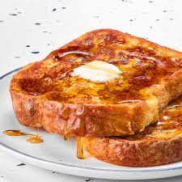

French Toast

Description
A very simple and easy method to creating some perfectly done french toast. Great for an early morning or snack.
Ingredients
- 1/4 cup milk
- 1 egg
- 1/8 teaspoon salt
- 1/8 teaspoon vanilla extract
- 2 slices of bread
- 1 tablespoon olive oil
Steps
- Mix the milk, egg, salt, and vanilla extract in a shallow bowl or dish. Dip both sides of each piece of bread in the mixture.
- Heat a large frying pan over medium-high heat and add oil. Cook both sides of the toast until light brown, 2-3 minutes.
- Serve with optional sugar, cinnamon, or syrup.
Home Page